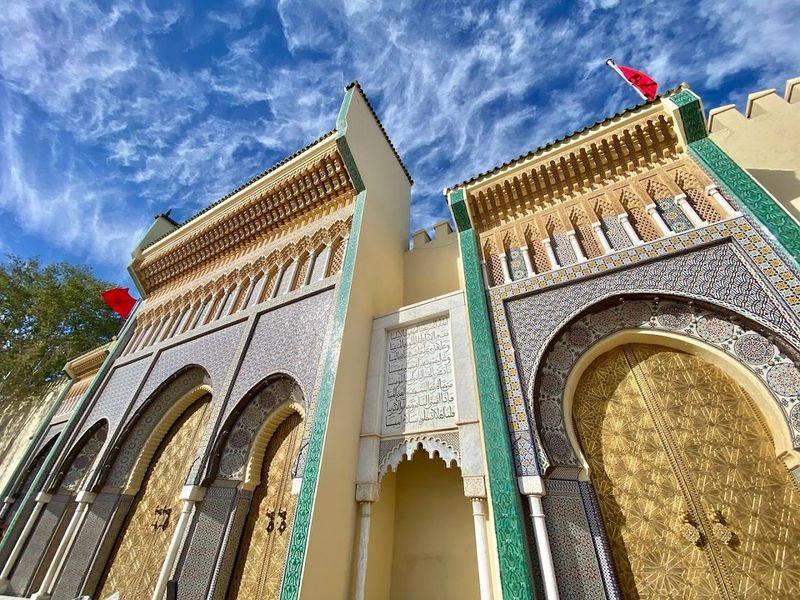
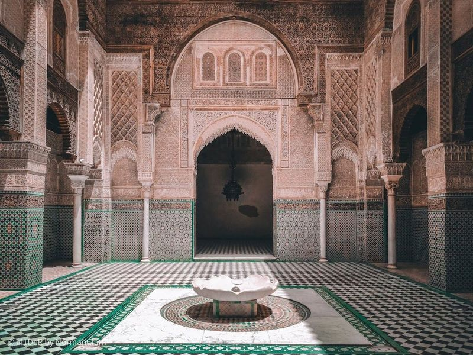
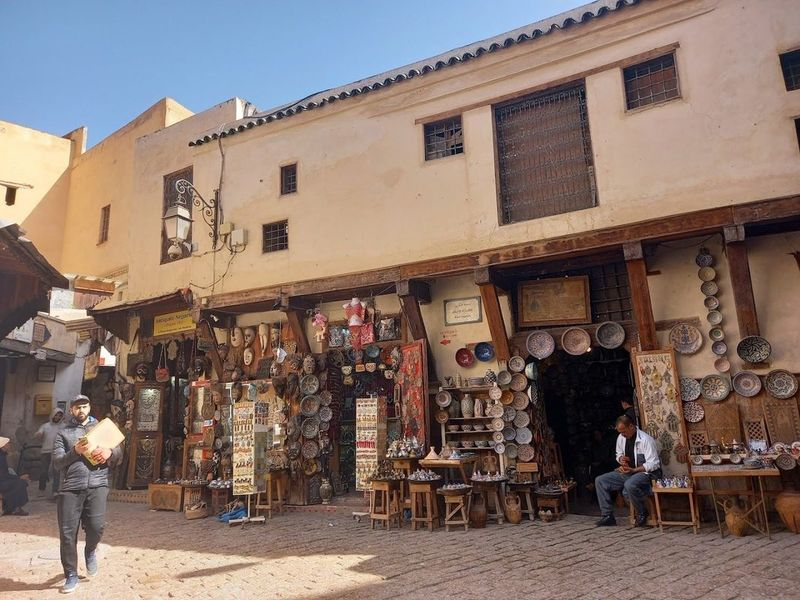
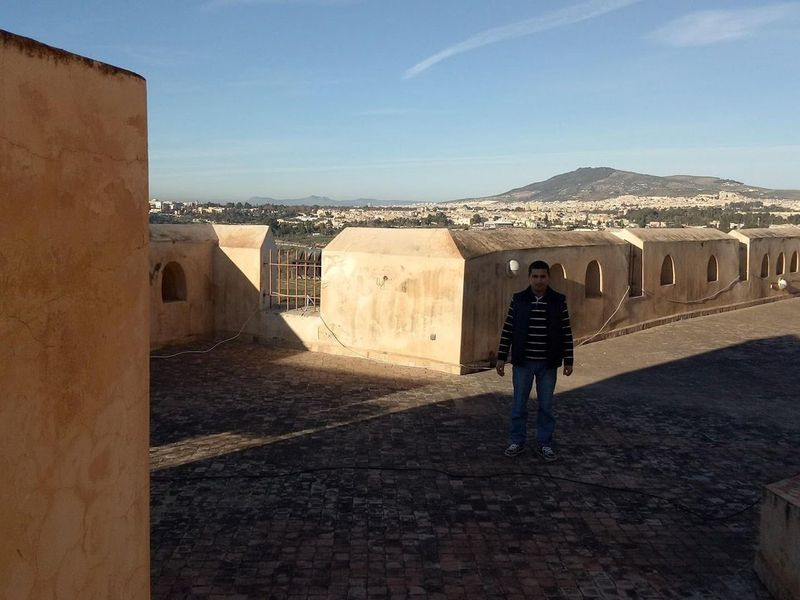
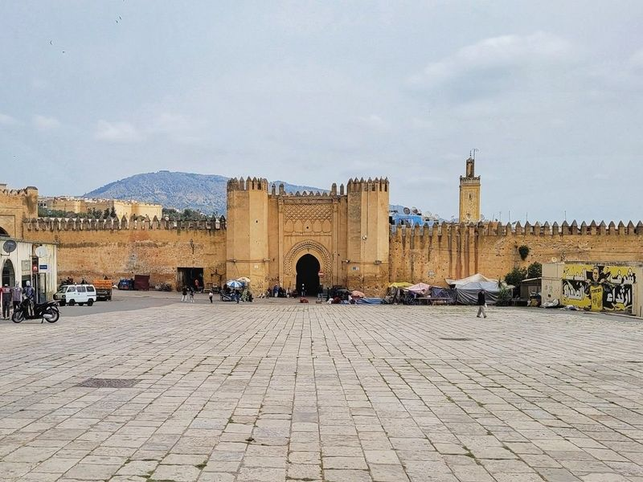
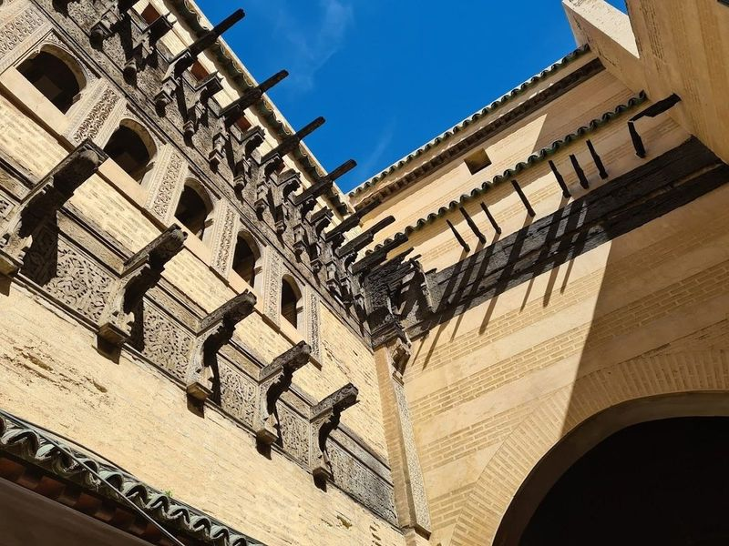
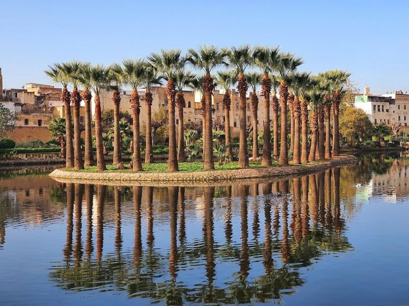
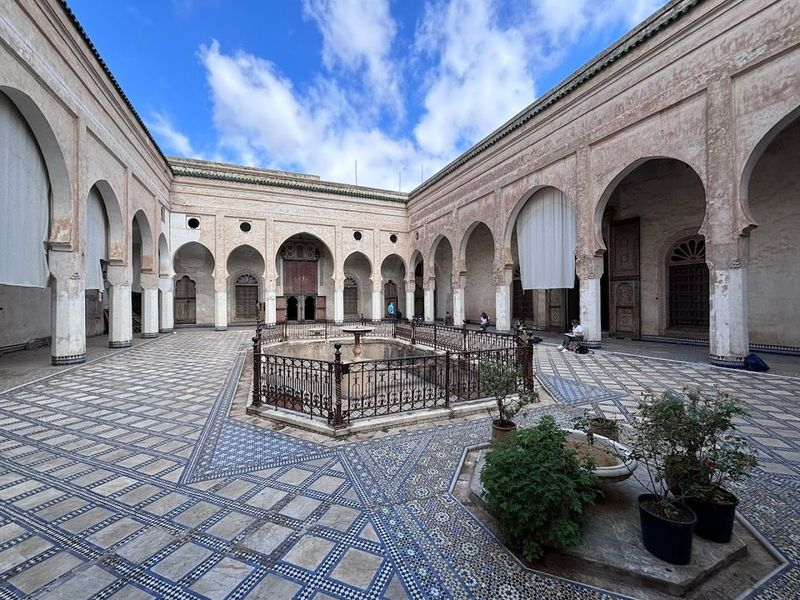
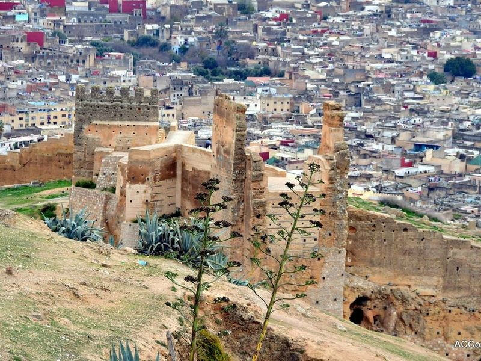
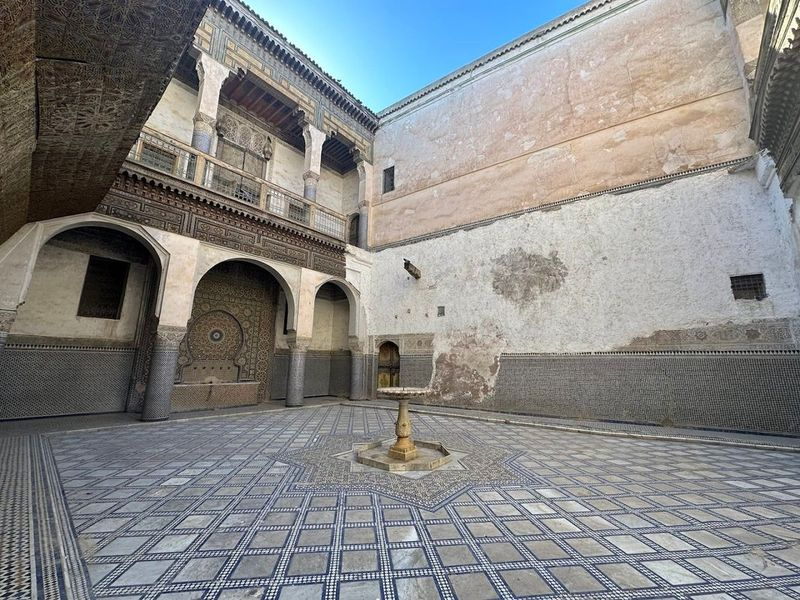

Explore Fez
A Brief History
Fez became Morocco's spiritual and scholarly capital under the Marinid dynasty in the thirteenth and fourteenth centuries, when theological colleges, fondouks, and tanneries filled Fes el-Bali. The Idrisid foundation of the ninth century, the Al-Qarawiyyin university, and the French protectorate's Ville Nouvelle record how imperial patronage, Andalusian refugees, and craft guilds shaped North Africa's largest walled medina.
Attractions Map
Top Sights & Activities

Royal palace of Fes
The Royal Palace in Fez, also known as Dar el Makhzen, is a landmark with its colorful mosaic architecture, landscaped gardens, and impressive golden doors adorned with handcrafted brass knockers. Although visitors cannot explore the palace grounds, they can admire it from one of the seven remarkable gates featuring Moroccan tiles and carved cedarwood. The largest royal palace in Morocco, it serves as the official residence of the King when he visits the city.

Al Attarine Madrasa
Al Attarine Madrasa is a 14th-century Islamic school located near the bustling Souk al-Attarine in Fes. Built by the Marinid sultan Uthman II Abu Said, it features tile work, intricate zellije tilework, ornate carved stucco, and delicate cedar woodwork throughout its galleried courtyard.

Place Seffarine
Place Seffarine is a charming square nestled in the heart of Fez el-Bali's medina, flanked by the souk of dyers and tanners. The square is named after the coppersmiths who historically practiced their craft here, creating an array of utensils such as teapots, trays, pots, and more. While today's artisans mainly focus on repairing old vessels, visitors can still observe them skillfully shaping metal with rhythmic hammering.

Borj Sud
Borj Sud is an ancient military tower located in southern Fez, offering a glimpse into the city's historical defenses. Built during the 16th century, it stands as a significant landmark just outside the medina. Unlike its sister fort, Borj Nord, it retains a simple square shape without corner bastions. Visitors can easily reach it from Bab Jdid and enjoy panoramic views of Fez from its terrace.

Bab Boujloud
Bab Boujloud, a triple-arched Moorish gate, serves as the western entrance to Fes el-Bali in Morocco. Originally constructed in the early 12th century under the Almoravid dynasty, it was later adorned with cobalt blue and green tilework during the French Protectorate in 1913.

Bou Inania Madrasa
Bou Inania Madrasa forms part of the documented heritage landscape of Fez, with municipal and regional listings describing its role in the historic centre. Bou Inania Madrasa forms part of the documented heritage landscape of Fez, with municipal and regional listings describing its role in the historic centre.

Jnan Sbil
Jnan Sbil, also known as Bou Jeloud Gardens, is a historic park located between Fes el-Jdid and Fes el-Bali. Established in the 18th century by Sultan Moulay Abdallah, this lush green space features ponds and over 3,000 species of plants. After falling into decline, the park was revitalized in the 2000s and now boasts meticulously tended water gardens with geometric fountains adorned with zellige tiles.

El Glaoui Palace
El Glaoui Palace, a remarkable gem nestled within the medina of Fes, invites visitors to step back in time and experience its rich history. Once the residence of Thami El Glaoui, this palace served as a seat of power and showcases exquisite architectural details like intricate stucco work and beautifully carved cedarwood doors.

Marinid Tombs
The Marinid Tombs, built in the 14th century, are a collection of impressive mausoleums and graves located on a hill overlooking the city of Fes. The goldstone tombs capture the opulence and beauty of this historical site. While little remains of the original decoration, visitors can still wander through the horseshoe arches and stucco walls to experience a sense of mystery.

Bab Guissa
Bab Guissa is a 12th-century arched stone city gate that serves as one of the fourteen entrances to the historic city of Fes. Nestled beneath the crenellated ramparts of ancient walls, this gateway offers an intriguing starting point for your exploration. While walk up from nearby streets, taking a taxi might be more convenient, allowing you to leisurely stroll back down and soak in the sights.